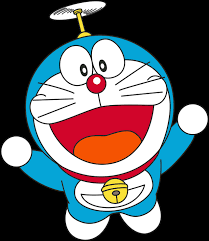

Cartoons

Dora Buji
Dora Márquez is the title character and protagonist of the American
children's animated television series and multimedia franchise of the
same name.
She is portrayed as a heroic Latina girl who goes on countless
adventures to find something or help somebody in need.
Dora was originally created to help teach Spanish in grade schools.
As time went on, she was depicted on live shows in theatres, stadiums,
and halls, originally as a bunny that lived in the woods, but later
in production as a Pan-Hispanic (ambiguous race) girl.

Doraemon
Doraemon is a fictional title character in the Japanese manga and anime
eponymous series created by Fujiko F. Fujio. Doraemon is a male robotic earless
cat that travels back in time from the 22nd century to aid a preteen boy named
Nobita. An official birth certificate for the character gives him a birth
date of 3 September 2112 and lists his city of residency as Kawasaki, Kanagawa,
the city where the manga was created. In 2008, Japan's Foreign Ministry appointed
Doraemon the country's.

Chotta Bheem
Chhota Bheem (transl.Little Bheem) is an Indian animated comedy adventure
television series, created by Green Gold Animations based in Hyderabad.
This show is available in English, Hindi, Telugu,Tamil, Kannada, Malayalam
and Marathi. Bheem is a brave, strong and intelligent young boy. He often
manages to solve everyone's problems which endears him to the townspeople
of Dholakpur.

Motu Patlu
Motu Patlu is an Indian animated sitcom that premiered on Nickelodeon
in India on 16 October 2012. This show is available in Hindi, Tamil,
Telugu, Malayalam, Marathi, Kannada and Bengali. The series is adapted from
the classic comic strip Lotpot.It focuses on the misadventures of two friends,
Motu and Patlu, landing in trouble and comical situations, later being rescued
only by luck. It is one of the most popular kids' shows in India.